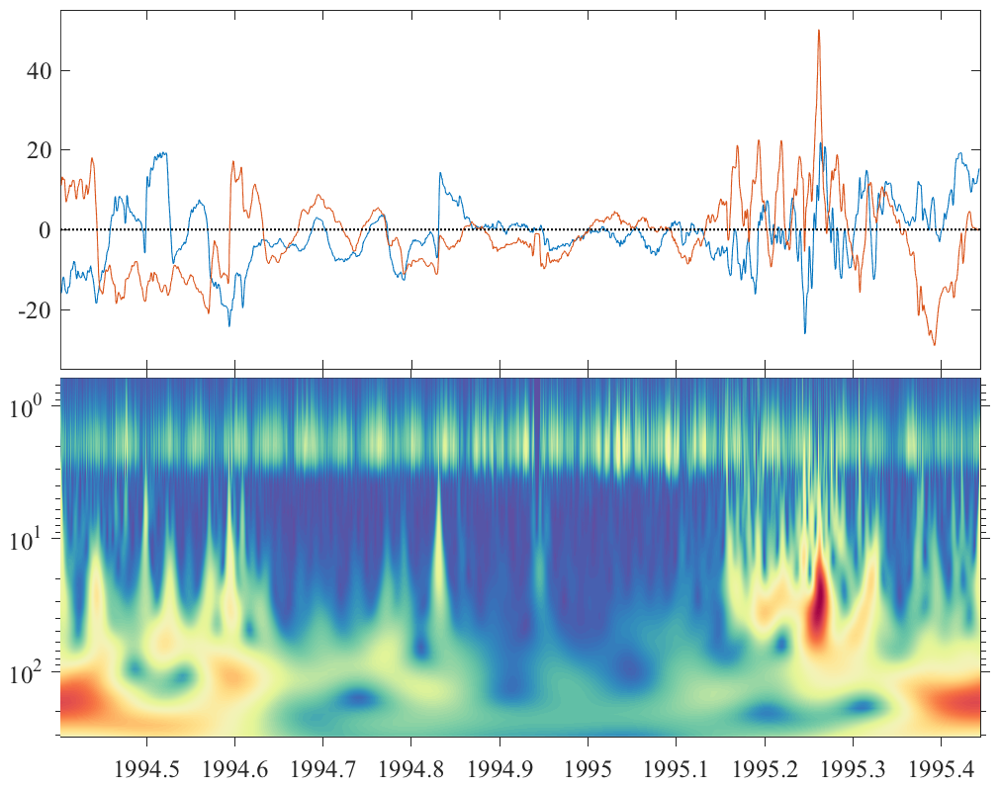

WAVETRANS Continuous wavelet transform. _______________________________________________________________________  _______________________________________________________________________ W=WAVETRANS(X,PSI) computes the wavelet transform W of a data series X using wavelets PSI. X has time oriented in rows, and PSI is either a matrix of wavelets, or a cell array defining wavelet properties. If PSI is a matrix containing the wavelets, SIZE(PSI,1) should be the same as SIZE(X,1), with time-domain wavelets at different scales or frequencies in the columns of PSI. See MORSEWAVE or MORLWAVE. If PSI is a cell array, it defines the properties of generalized Morse wavelets, which are then computed internally, as described below. ___________________________________________________________________ Multiple input series X and PSI may both contain multiple components. Then PSIF(:,:,k) is the kth wavelet, and X(:,n) is the nth data component. If there are K wavelets at J frequencies and M data points in N components of X, then W is of size M x J x N x K. Note that W is always squeezed to remove singleton dimensions. X can also be a 3D array of size M x N x K, if the wavelet contains only one component. Then W is again of size M x J x N x K. [W1,W2,...,WN]=WAVETRANS(X1,X2,...,XN,PSI) also works, where the XN are all column vectors of the same length. ___________________________________________________________________ Generalized Morse wavelets WAVETRANS can automatically compute the wavelet transform using the generalized Morse wavelets, without needing to precompute the wavelets. WAVETRANS(X,{GAMMA,BETA,FS}), with PSI being a cell array, uses the Generalized Morse Wavelets specified by the parameters GAMMA and BETA. FS is an array of *radian* frequencies, as in cos(ft) not cos(2 pi ft), assuming a unit sample rate. Thus the Nyquist frequency is at pi. Use MORSESPACE to easily choose the frequency bins. WAVETRANS(X,{K,GAMMA,BETA,FS}) uses the first K orthogonal multi- wavelets to create K different transforms. The default is K=1, employing only the first wavelet. See MORSEWAVE for details. WAVETRANS(X,{...,'energy'}) specifies a unit energy normalization for the wavelets. The default is the 'bandpass' or unit amplitude normalization. See MORSEWAVE for details. For general purpose use, set GAMMA=3 and choose BETA to be no smaller than one. Increase BETA to make your wavelet have more 'wiggles'. ___________________________________________________________________ Boundary conditions W=WAVETRANS(...,STR), where STR is a string, optionally specifies the boundary condition to be imposed at the edges of the time series. Valid options for STR are STR = 'periodic' for periodic boundary conditions STR = 'zeros' for zero-padding beyond the endpoints STR = 'mirror' for reflecting the time series at both ends STR = 'reverse' for reflection together with a sign reversal The default value of STR is 'periodic', which means endpoints of the time series are implicitly joined to make a periodic signal. All boundary conditions take into account potential blocks of missing data, marked by NaNs, at beginning and end of each column. ___________________________________________________________________ Missing data The data X may contain blocks of NANs at the beginning and/or end of each column, marking the absence of data. In this case only the data series is taken to correspond to the block of finite data values, and the boundary conditions are applied accordingly. The corresponding portions of the transform matrix W are then also set to NANs. No NANs may occur in the interior of the data series. ___________________________________________________________________ Detrending Note that the data X is detrended before transforming. This feature is suppressed by WAVETRANS(..., 'nodetrend'). ___________________________________________________________________ Complex-valued data The wavelet transform is normalized differently for complex-valued data than for real-valued data, and this in turns depends on whether the 'bandpass' or 'energy' normalizations are specified. If WX and WY are the wavelet transforms of two real-valued signals, X and Y, then if the 'bandpass' normalization is specified, WP=WAVETRANS(X+iY,PSI) = (1/2)*(WX + i WY) WN=WAVETRANS(X-iY,PSI) = (1/2)*(WX - i WY) defines the positive and negative rotary transforms WP and WN. The factor of 1/2 sets the peak value of the wavelet transform of a complex exponential to the amplitude of the complex exponential itself. Alternatively, if the 'energy' normalization is specified, then WP=WAVETRANS(X+iY,PSI) = (1/SQRT(2))*(WX + i WY) WN=WAVETRANS(X-iY,PSI) = (1/SQRT(2))*(WX - i WY) is used instead. The factors of SQRT(2) are included such that the total power is unchanged between the rotary and Cartesian transforms: ABS(WX).^2+ABS(WY).^2 = ABS(WP).^2+ABS(WN).^2. There are two equivalent ways to compute the positive and negative rotary transforms. The first is [WP,WN]=WAVETRANS(X+iY,X-iY,PSI) which takes the wavelet transform of the X+iY and its conjugate. The second is to take the wavelet transform of the real-valued data [WX,WY]=WAVETRANS(X,Y,PSI) followed by [WP,WN]=VECTMULT(TMAT/SQRT(2),WX,WY) (bandpass normalization) or [WP,WN]=VECTMULT(TMAT,WX,WY) (energy normalization) which converts WX and WY to WP and WN with a matrix multiplication using the unitary matrix TMAT=[1 i; 1 -i]/SQRT(2). ___________________________________________________________________ Parallelization WAVETRANS(...,'parallel') parallelizes the wavelet transform using a PARFOR loop, when the data X contains multiple columns. This requires that Matlab's Parallel Computing Toolbox be installed. __________________________________________________________________ See also MORSESPACE, RIDGEWALK, WAVESPECPLOT. 'wavetrans --t' runs some tests. 'wavetrans --f' generates a sample figure. Usage: w=wavetrans(x,psi); w=wavetrans(x,{gamma,beta,f,str}); w=wavetrans(x,{gamma,beta,f,str},str); [wx,wy]=wavetrans(x,y,{gamma,beta,f,str},str); [wp,wn]=wavetrans(x+i*y,x-i*y,{gamma,beta,f,str},str); _________________________________________________________________ This is part of JLAB --- type 'help jlab' for more information (C) 2004--2023 J.M. Lilly --- type 'help jlab_license' for details